Project 5: Facial Keypoint Detection with Neural Networks
Janise Liang
Part 1: Nose Tip Detection
First, I built a very simple neural network to detect the nose keypoint. This model takes in an image as a 60- by 80-pixel input, and outputs an x and y coordinate for the nose keypoint.
Example dataloader images with ground truth labels:
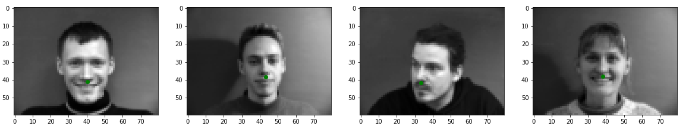
NoseNet Architecture:
NoseNet(
(conv1): Sequential(
(0): Conv2d(1, 16, kernel_size=(3, 3), stride=(1, 1))
(1): ReLU()
(2): MaxPool2d(kernel_size=2, stride=2, padding=0, dilation=1, ceil_mode=False)
)
(conv2): Sequential(
(0): Conv2d(16, 24, kernel_size=(5, 5), stride=(1, 1))
(1): ReLU()
(2): MaxPool2d(kernel_size=2, stride=2, padding=0, dilation=1, ceil_mode=False)
)
(conv3): Sequential(
(0): Conv2d(24, 32, kernel_size=(5, 5), stride=(1, 1))
(1): ReLU()
(2): MaxPool2d(kernel_size=2, stride=2, padding=0, dilation=1, ceil_mode=False)
)
(fc1): Sequential(
(0): Linear(in_features=768, out_features=200, bias=True)
(1): ReLU()
)
(output): Linear(in_features=200, out_features=2, bias=True)
)
Hyperparameter Tuning:
I tried varying the learning rate (1e-3 or 5e-3), batch size (1 or 4), and number of convolution layers (3 or 4). The final results of the models with different hyperparameters are pretty similar. In 25 epochs, the learning rate of 5e-3 appears to converge a bit quicker. Below are the training and validation loss for the different hyperparameter sets.
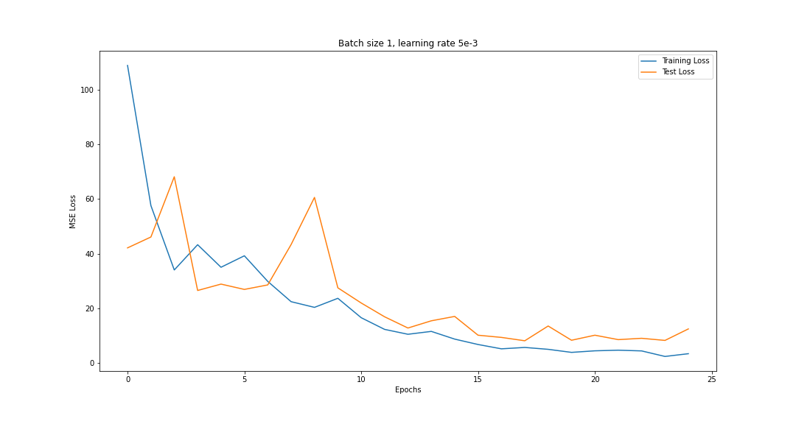
3 convolution layers, lr=5e-3, no batching
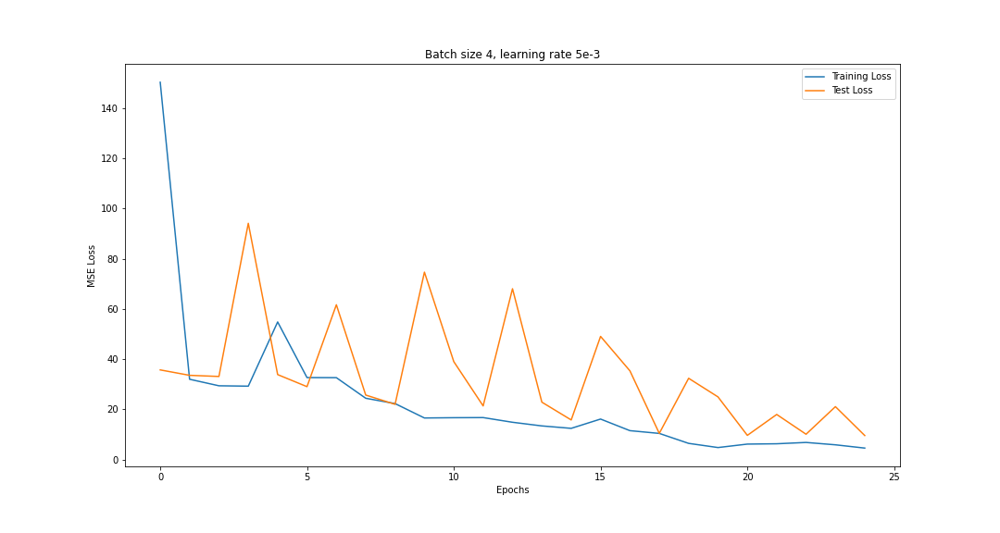
3 convolution layers, lr=5e-3, batch size 4
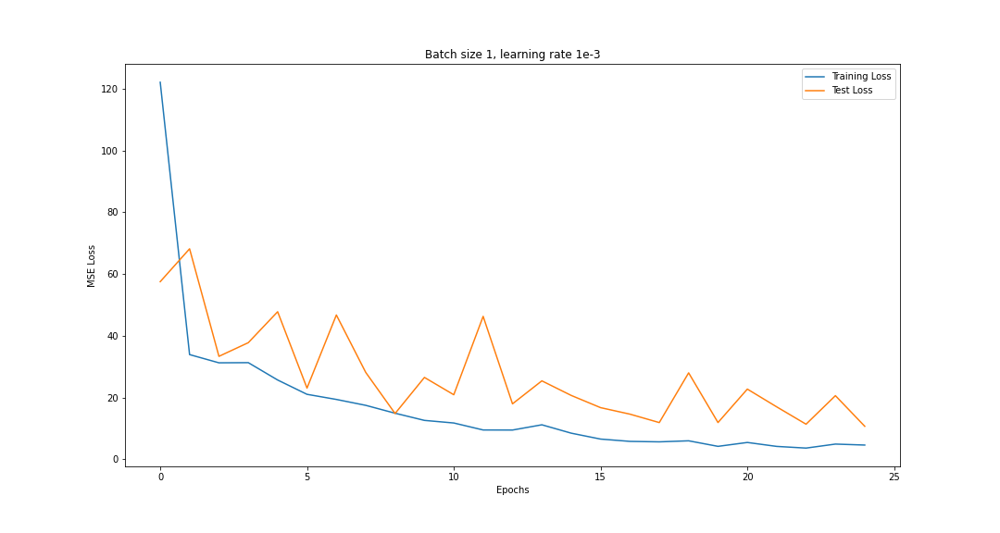
3 convolution layers, lr=1e-3, no batching
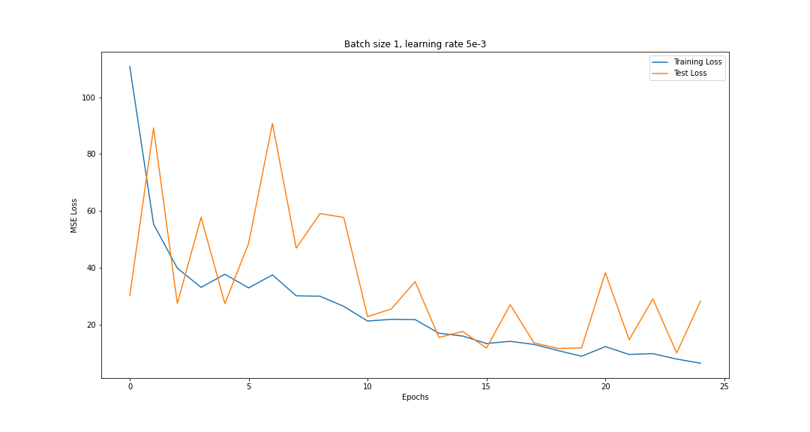
4 convolution layers, lr=5e-3, no batching
For some reason, the validation loss line for the batched model seems to be spikier than the others. Also, the 4-layer model seems to train a bit slower, likely since there are more convolution parameters (although they also have smaller fully-connected layers). I chose the top left model, since it appears slightly smoother and has a final lower training loss.
Example keypoint predictions:
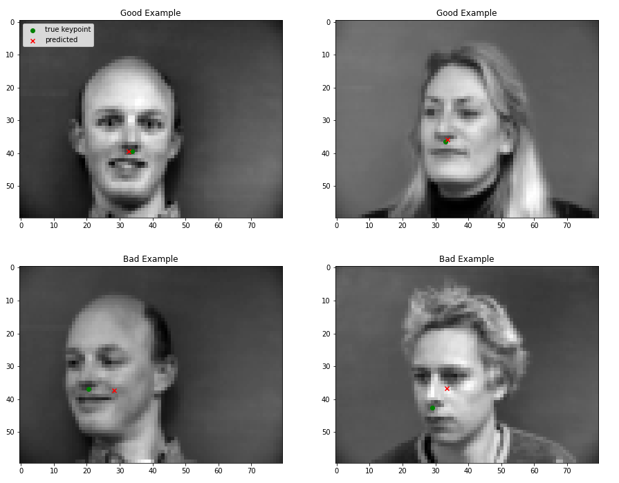
It appears like the front-facing images are more likely to classify correctly than the rotated faces, which makes sense since there are more of them in the dataset. In addition, the worst failed cases are mostly the guy with the spiky hair or the bald guy, so maybe the top of the subject's head has some effect on the nose keypoint prediction.
Part 2: Full Facial Keypoints Detection
Example dataloader images with ground truth labels:
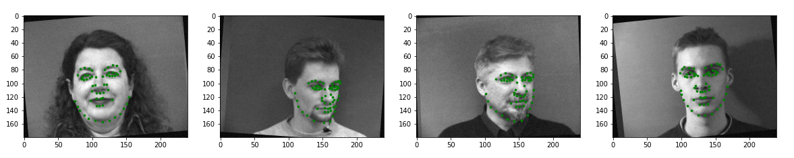
FaceNet Architecture:
FaceNet(
(conv1): Sequential(
(0): Conv2d(1, 32, kernel_size=(3, 3), stride=(1, 1))
(1): ReLU()
(2): MaxPool2d(kernel_size=2, stride=2, padding=0, dilation=1, ceil_mode=False)
)
(conv2): Sequential(
(0): Conv2d(32, 64, kernel_size=(5, 5), stride=(1, 1))
(1): ReLU()
(2): MaxPool2d(kernel_size=2, stride=2, padding=0, dilation=1, ceil_mode=False)
)
(conv3): Sequential(
(0): Conv2d(64, 64, kernel_size=(7, 7), stride=(1, 1))
(1): ReLU()
)
(conv4): Sequential(
(0): Conv2d(64, 32, kernel_size=(5, 5), stride=(1, 1))
(1): ReLU()
)
(conv5): Sequential(
(0): Conv2d(32, 24, kernel_size=(3, 3), stride=(1, 1))
(1): ReLU()
(2): MaxPool2d(kernel_size=2, stride=2, padding=0, dilation=1, ceil_mode=False)
)
(fc1): Sequential(
(0): Linear(in_features=7920, out_features=1024, bias=True)
(1): ReLU()
)
(fc2): Linear(in_features=1024, out_features=116, bias=True)
)
I used a batch size of 2, and an initial learning rate of 1e-3. I tried an adaptive learning rate by including additional training epochs with lower learning rates to hopefully increase accuracy while training quickly. In total, the model was trained over 110 epochs.
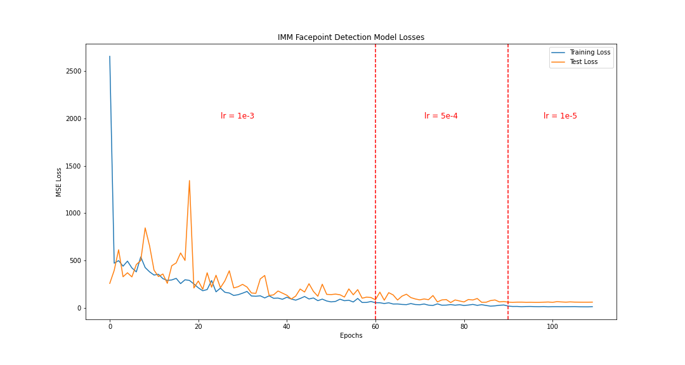
Example keypoint predictions:
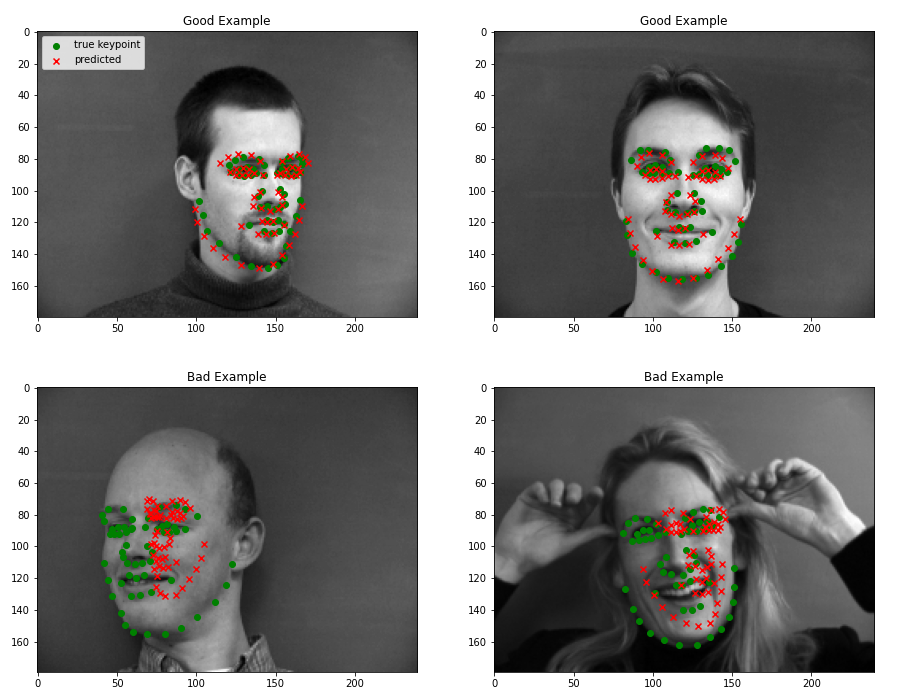
Similarly to the previous part, we see that the bad examples are usually the irregular images, like the woman with her hands up, or the bald man that also failed on the nosetip detection in part 1. The good examples are usually very close to the "typical" face from this dataset, which has a majority of males with shorter hair. The predictions on the front-facing images also tend to be more accurate than the side-facing ones.
Learned Filters:
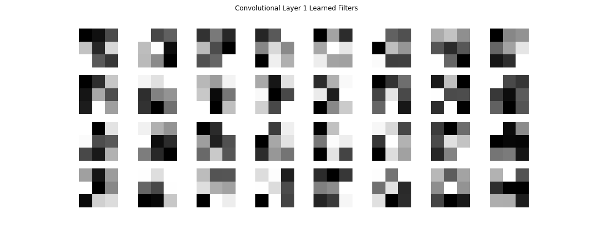
Part 3: Larger Dataset (iBug Faces in the Wild)
IbugNet Architecture:
The model that I used is the ResNet18 model, with the input and output layers adjusted for our specific dataset. I changed the input layer to take a single channel, and the output layer to return 136 output channels, corresponding to the 68 face keypoints in the data. The model's pretrained weights are used to decrease training time.
I first used the dataset augmentation from part 2, but since we have so many images in the training set (6333), the model still works well without augmentation. Since it ran a bit faster without the augmentation, I decided it was not necessary to include it. The only data preprocessing that I used was centering the pixel brightness values (by subtracting 0.5 from each pixel) and cropping to the bounding box provided by the XML data, with 20 pixels of padding to account for the fact that many of the boxes cropped out keypoints.
Hyperparameters:
I used a learning rate of 1e-3 for 10 epochs with the Adam optimizer and MSE loss function. The model trained extremely quickly, which is a testament to how useful the pretrained models are.
Example keypoint predictions:
Below are some examples from the test dataset after applying the bounding box crop to each input image.
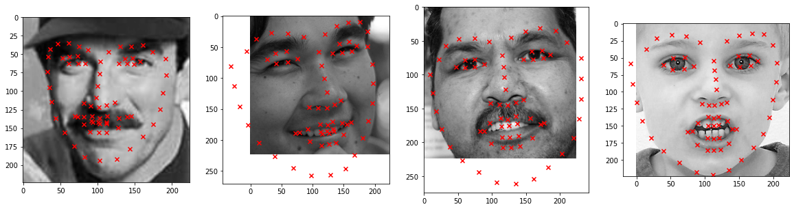
And here are some examples from some of the images I used in project 3:
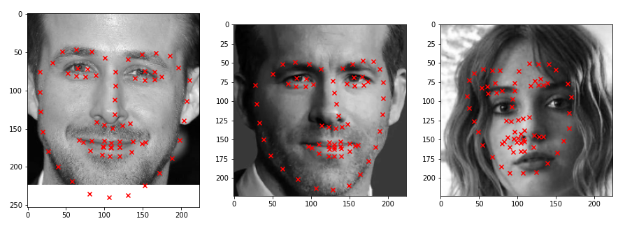
The model performs really well! Both Ryans have almost perfect keypoints, although Ryan Reynolds has little bit of inaccuracies near his left ear. Robin's face is not as well classified, likely due to hair that covers a significant part of her eyebrows and ears. Also, see the bells and whistles section below for my application of project 3's face morph using the keypoints identified by the neural network.
Part 4: Pixelwise Classification
Heatmap generation and dataloader images:
We generate 68 heatmaps (one for each keypoint) using a multivariate normal distribution centered at the keypoint with covariance 8.
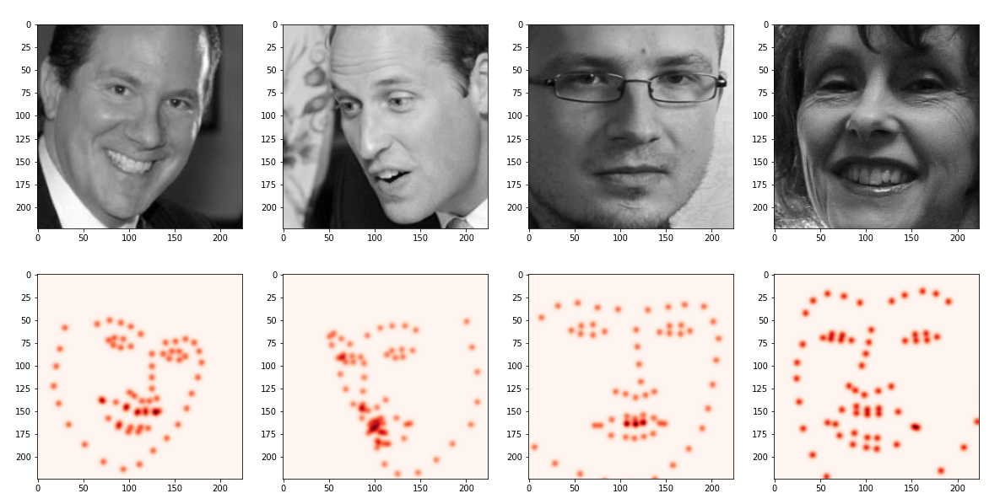
Model Architecture:
The model that I used is a modified version of the
FCN ResNet-50 model, with the input and output layers adjusted for our specific data. I changed the input layer to take a single channel, instead of the original 3 color channels, and the output gives 68 channels, one for each keypoint. Once again, the model's pretrained weights are used to decrease training time.
I used a learning rate of 1e-3, and the Adam optimizer with MSE loss function as before.
And again, here are some examples from my collection. The predictions aren't as great as the ones from part 3, but they're still not too bad. Note that since the pixelwise classification algorithm picks the brightest pixel in the 224 by 224 image, it will never predict a pixel outside of the image, unlike the model in part 3. This is likely why we can't detect Ryan Gosling's chin correctly.
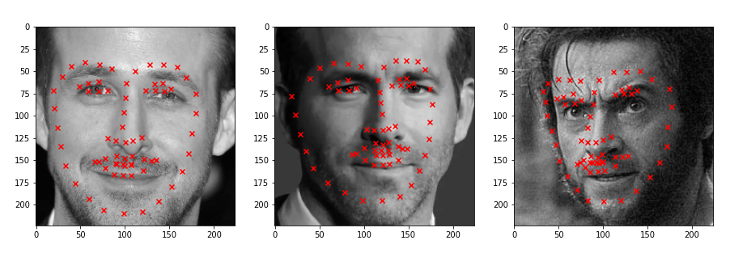
Example keypoint predictions:
Using the maximum pixel as the predicted keypoint, we get the results below. The model is much larger and takes longer to train, so this might explain the inaccuracies in the labeling of the middle two images. However, the model still works relatively well after only 10 epochs of training.
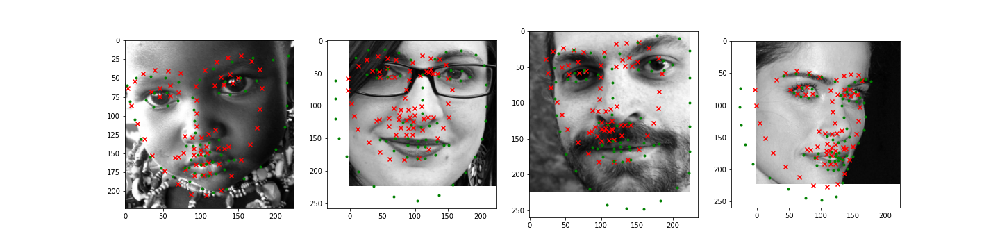
Part 5: Kaggle
Kaggle username: janise1
I used the model from part 3, which got a MAE of 21.69 on Kaggle.
Bells and Whistles
Extending automatic keypoint detection to project 3:
First, I tried computing a morph GIF using the keypoints found on Ryan Reynolds' and Ryan Gosling's faces. Since the model only identifies keypoints on the face, we see significant artifacts around the neck, hair, and ear. But the face area is pretty well-matched, and this is definitely much easier than taking the effort of manual annotation!

Auto-Detected Keypoints

Manually Selected Keypoints
I also tried finding the mean face of the IMM dataset, using my detected keypoints instead of the annotations that come with the dataset. Unfortunately, my model's detected points don't seem to be that accurate, so the overall average face is extremely blurry due to inconsistent labelling.
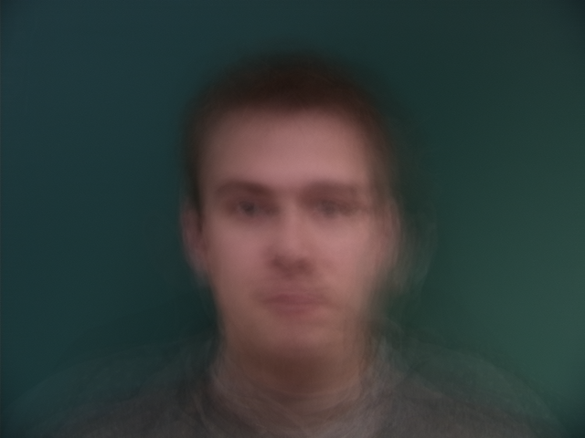